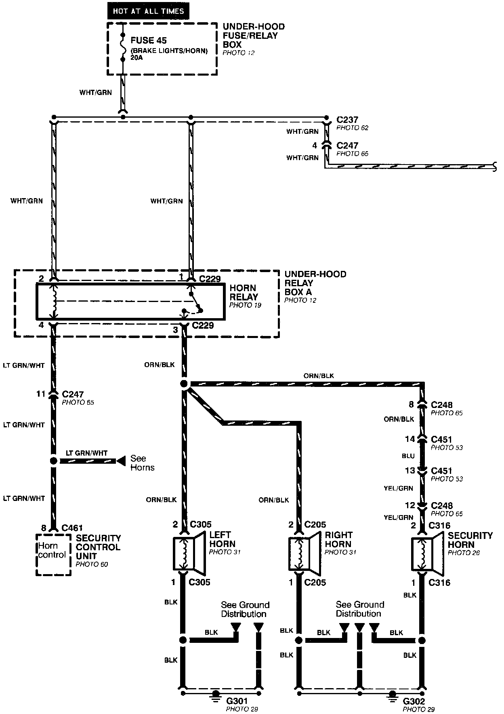
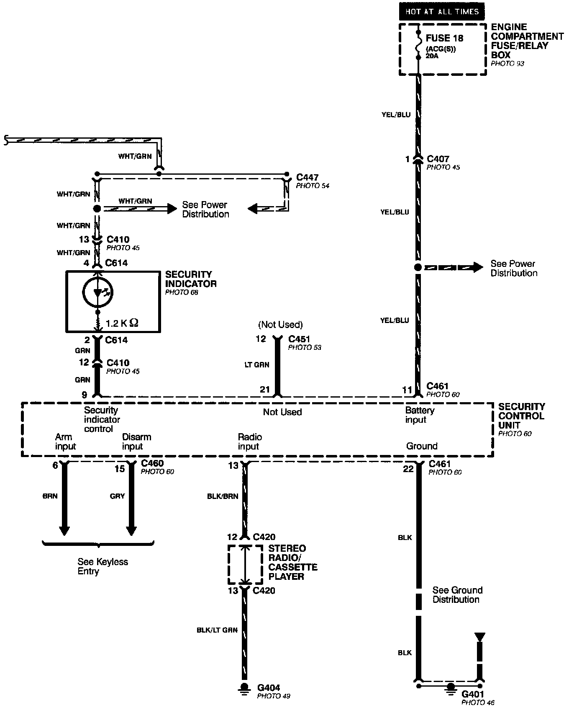
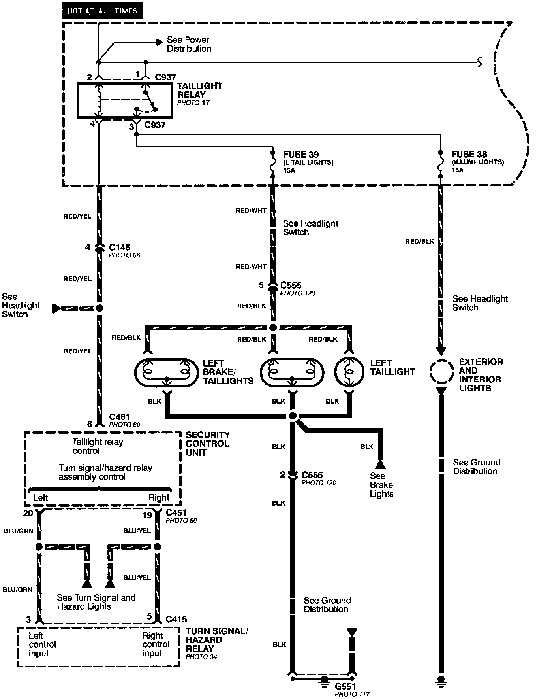
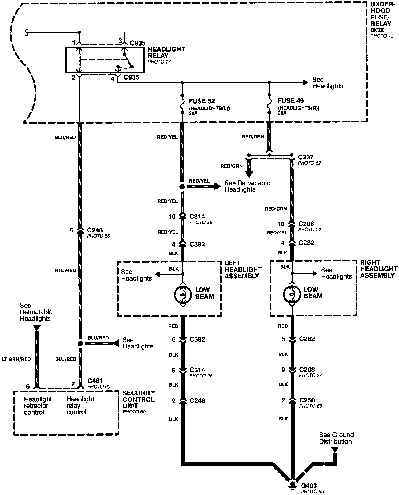
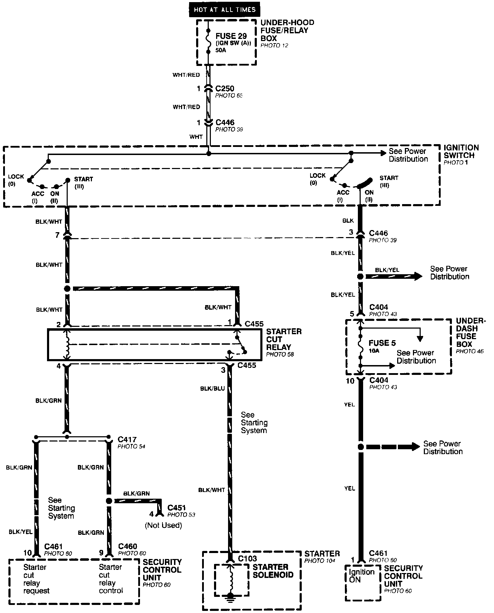
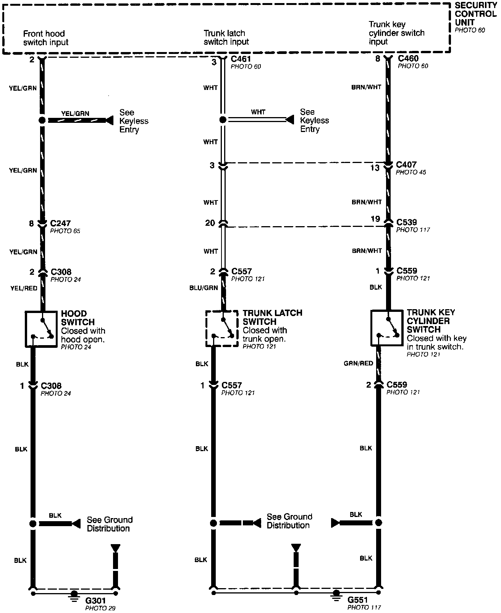
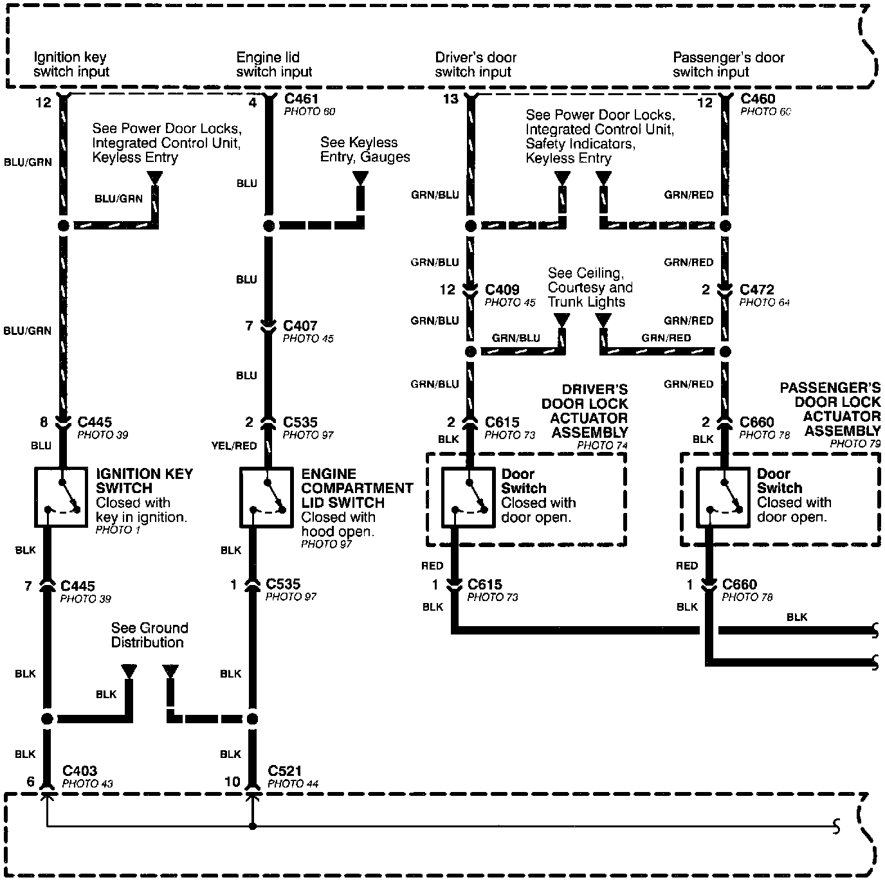
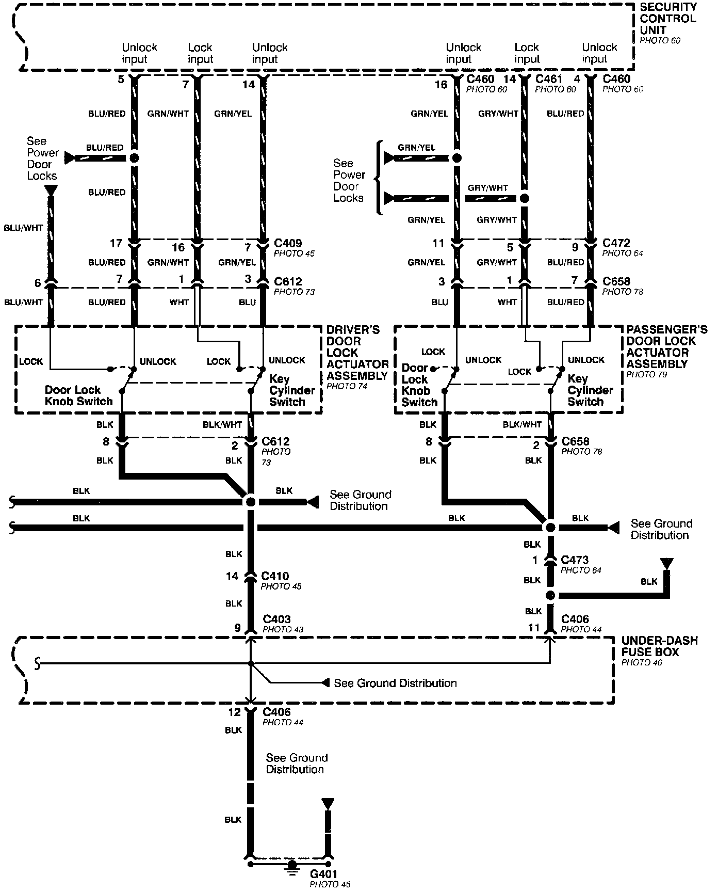

Electrical Diagrams
Security System (Part 1 Of 8):

Security System (Part 2 Of 8):

Security System (Part 3 Of 8):

Security System (Part 4 Of 8):

Security System (Part 5 Of 8):

Security System (Part 6 Of 8):

Security System (Part 7 Of 8):

Security System (Part 8 Of 8):
